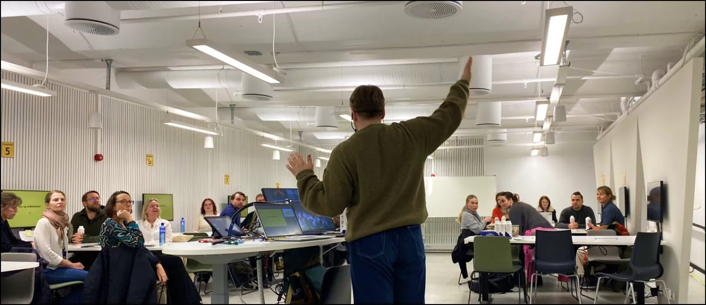
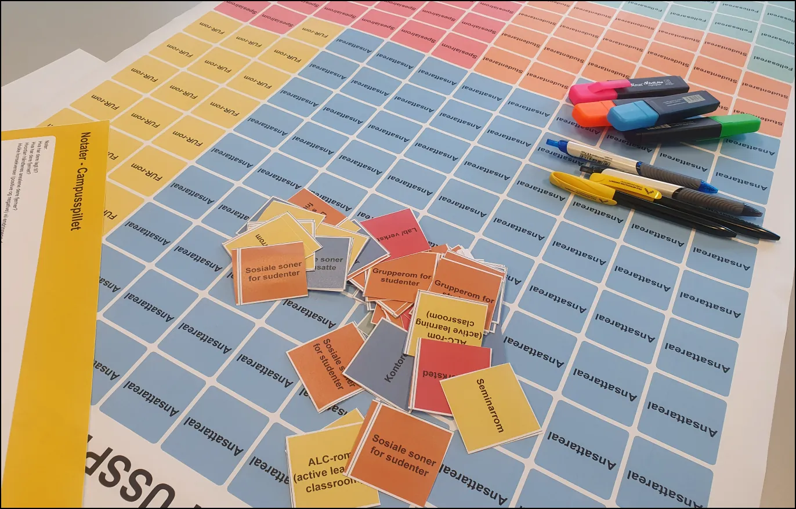
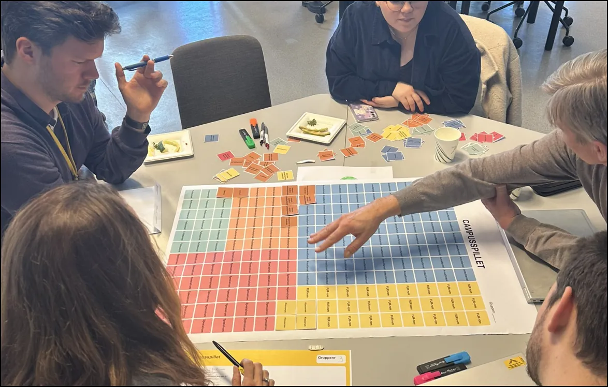
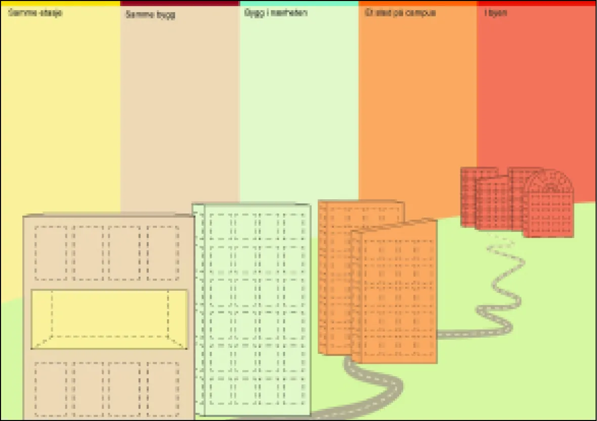
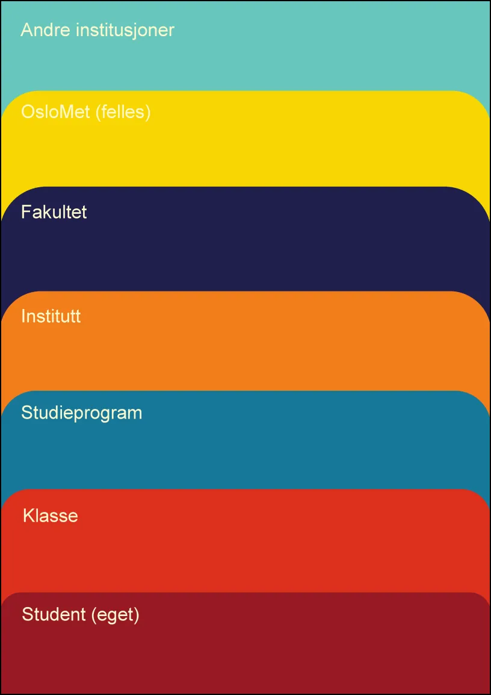
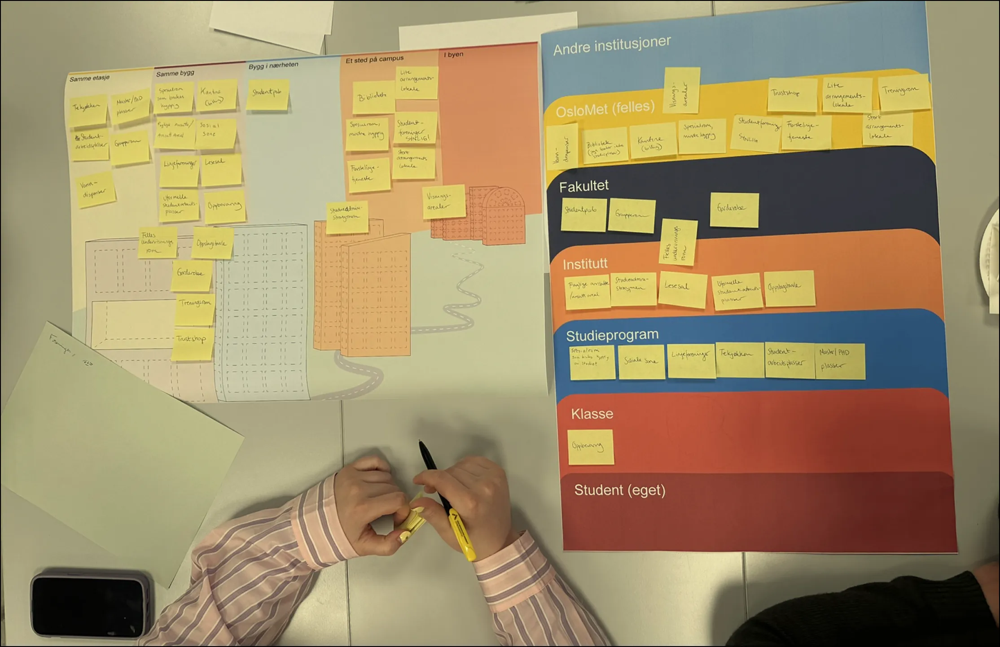

Campus workshop
Jobb
Jeg var med på å planlegge og gjennomføre workshopserien da jeg jobbet i campusprogrammet ved OsloMet

Team
Prosjektet ble gjennomført av campusprogrammet og konsulenter fra Ratio Arkitetker. Teamet besto av:
Solveig Dahl Grue, Andreas Fardal, Kristin Nordseth,
Mona Dahl, Victor Bratli Larsson, Hildegunn Haugen (Ratio) og Borghild Holsvik (Ratio)
Solveig Dahl Grue, Andreas Fardal, Kristin Nordseth,
Mona Dahl, Victor Bratli Larsson, Hildegunn Haugen (Ratio) og Borghild Holsvik (Ratio)
Bakgrunn
Jeg jobbet i 2023-2025 med campusutvikling på OsloMet. Et av hovedprosjektene jeg har bidratt til er en ny campusutviklingsplan, der jeg har vært med på å planlegge og gjennomføre workshops med ulike brukergrupper. Metodikken har mye til felles med designprosesser, og to workshops har vært spesielt lærerike for hvordan jeg tenker om deltakelse og prioritering.

Gjennom worshopserien hadde jeg rolle som konfransier/møteleder. I dette bildet legger jeg frem en kartlegingsrapport jeg utarbeidet som grunnlag for de første workshopene.
"Campus-spillet"
Å beskrive hva man ønsker seg er enkelt. Å prioritere det er vanskelig. Spesielt på en campus der plass til noe nytt betyr at noe annet må vike.

Vi laget en øvelse der ulike brukergrupper fikk omfordele campusarealer seg imellom, for å synliggjøre hva de egentlig prioriterte når de måtte velge bort noe.

Responsen var delt. Noen opplevde oppgaven som urettferdig og trakk seg før den startet. De som ble, beskrev det som befriende å endelig få snakke åpent om prioriteringer og øvelsen ga innsikt i hverandres situasjon på tvers av grupper.
Det jeg sitter igjen med er hvor mye motstand som kan oppstå når man gjør prioriteringer eksplisitte i stedet for abstrakte og at den motstanden ofte er et tegn på at man er inne på noe reelt.
"Hjemmebase"
Gjennom arbeidet med campusliv så vi at mange studenter mangler et sted de føler tilhørighet til – en "homebase". Målet med denne workshopen var å forstå hva en slik homebase burde inneholde, og for hvem.


Deltakerne jobbet med to gjennomgående spørsmål: hva bør ligge nært, og hva bør være eksklusivt for enkelte grupper fremfor delt av alle. Svarene varierte mye mellom fagmiljøer mindre, nisjepregede programmer ønsket en sterk lokal identitet, mens større programmer var mer åpne for å dele rom på et høyere nivå.
Det ga meg en tydeligere forståelse av at det ikke finnes én riktig løsning på tilhørighet. Det viktigste jeg tar med meg som designer er å kjenne forskjellen på når jeg bør designe en løsning, og når jobben min heller er å legge til rette for at brukerne designer sin egen.
